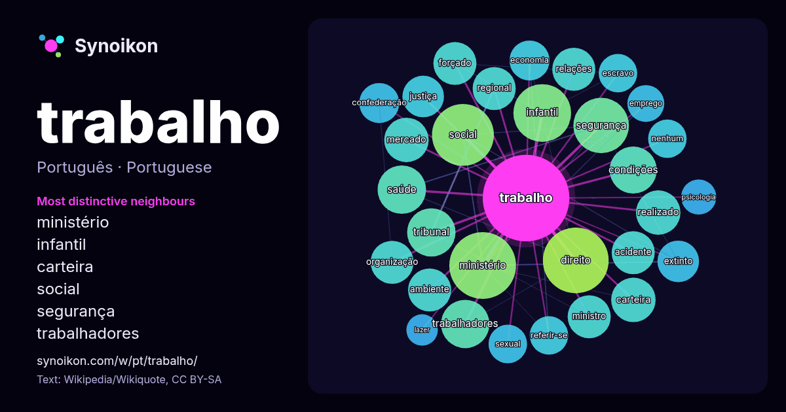

Português · palavra popular
trabalho
“work” · As palavras encontradas ao seu redor em 1423 ocorrências da Wikipédia, Wikiquote.

Vizinhos mais característicos
- ministério 23×
- infantil 22×
- carteira 16×
- social 14×
- segurança 14×
- trabalhadores 14×
- forçado 13×
- extinto 13×
- tribunal 13×
- escravo 12×
- referir-se 12×
- confederação 12×
- condições 12×
- direito 11×
- regional 11×
- acidente 11×
- saúde 10×
- emprego 9.8×
- sexual 9.8×
- justiça 9.6×
× = quantas vezes mais do que no texto geral da Wikipédia.
Vizinhos mais frequentes
- ministério 36
- direito 35
- social 31
- infantil 27
- brasil 26
- segurança 25
- força 24
- vida 22
- saúde 19
- trabalhadores 19
- tribunal 19
- condições 18
- carteira 16
- mercado 16
- realizado 16
- acidente 15
- ambiente 15
- atividades 15
- forçado 15
- internacional 15
Em contexto
- por Trabalho no Wikcionário, o dicionário livre. O Wikiquote tem citações relacionadas a Trabalho. Trabalho ou Trabalhos pode referir-se a: Trabalho (economia) Wikipedia snippets · Trabalho
- Nota: Para outros significados de trabalho, veja Trabalho (desambiguação). Em física, trabalho é a energia transferida para um objeto ou dele retirada Wikipedia snippets · Trabalho (física)
- significados, veja Trabalho (desambiguação). O trabalho é o fator de produção mais importante. Usualmente os economistas medem o trabalho em termos de horas Wikipedia snippets · Trabalho (economia)
- ª posição. É o fundador do Movimento Vida Além do Trabalho, que defende o fim da escala de trabalho 6x1, e inspirou a PEC do Fim da Escala 6x1. Já morou Wikipedia snippets · Rick Azevedo
- O mais-trabalho é um conceito da economia marxiana que designa o trabalho excedente, medido por sua duração, que ultrapassa o trabalho necessário para Wikipedia snippets · Mais-trabalho
- Para o órgão do governo português, veja Ministério do Trabalho (Portugal). Ministério do Trabalho e Emprego (MTE) é um ministério do Governo do Brasil Wikipedia snippets · Ministério do Trabalho e Emprego
- de trabalho no Brasil. Em 1824, a Constituição do Império, inspirada nos princípios da Revolução Francesa, assegurou ampla liberdade para o trabalho e Wikipedia snippets · Contrato de trabalho
- Direito do trabalho é o ramo jurídico que estuda as relações de trabalho. Esse direito é composto de conjuntos de normas, princípios e outras fontes jurídicas Wikipedia snippets · Direito do trabalho
Mais palavras
- arte
- ciência
- clima
- comida
- coração
- cão
- deus
- dinheiro
- família
- força
- gato
- história
- língua
- morte
- natureza
- ouro
- ponte
- saúde
- trem
- verdade
- vida
- água
Pré-calculado em 2026-10-09 com as configurações padrão (±5 palavras, corpus médio). O mapa interativo pode atualizá-lo com dados ao vivo.
Interface traduzida automaticamente; correções são bem-vindas.